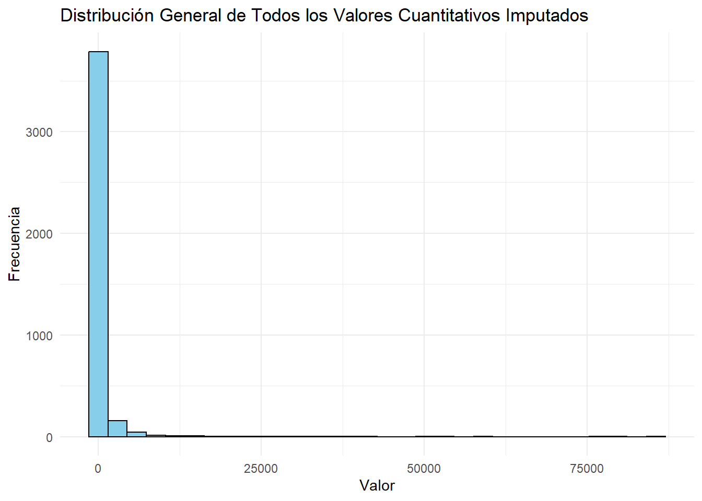
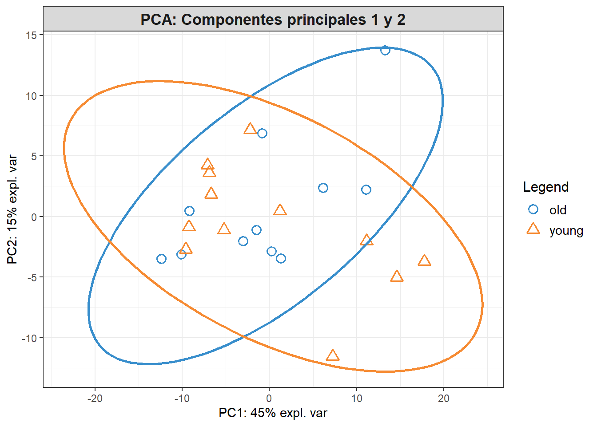
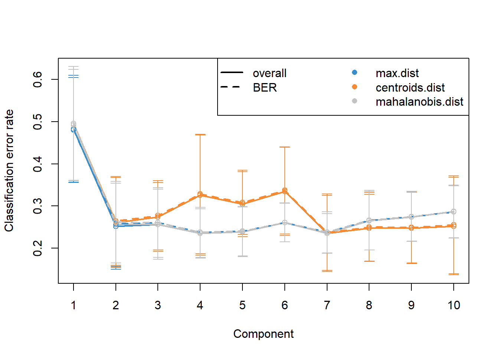
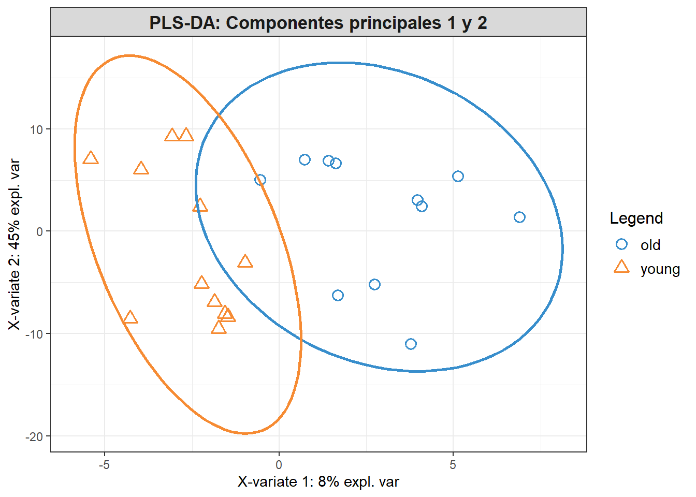
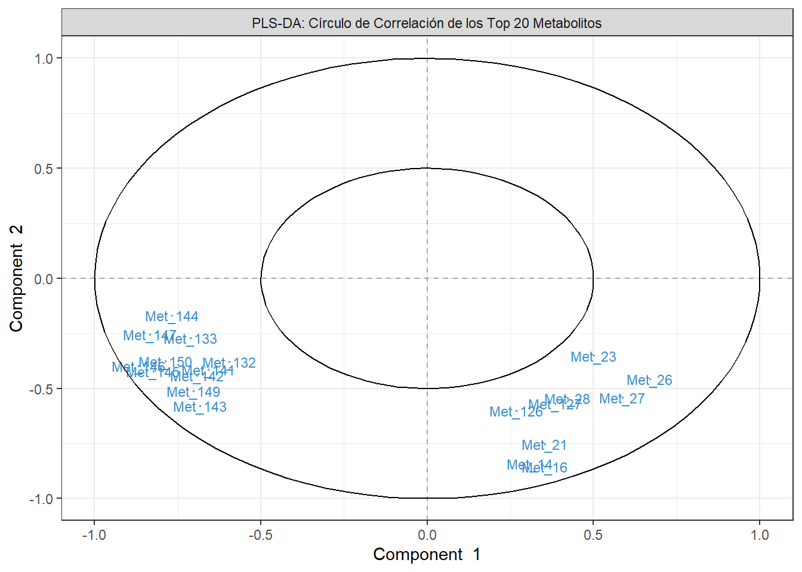

| Samples | group | X1261.82410453_13.462 | X1421.94930453_13.687 | X1443.93365453_13.687 |
|---|---|---|---|---|
| young_1 | Sample source:Heart | Sex:M | Age group:young | 8.2889 | 36.8705 | 6.0068 |
| young_2 | Sample source:Heart | Sex:M | Age group:young | 9.1300 | 11.2341 | 3.2156 |
| young_3 | Sample source:Heart | Sex:M | Age group:young | 9.0886 | 7.6486 | 5.4975 |
| young_4 | Sample source:Heart | Sex:M | Age group:young | 7.9396 | 13.3439 | 4.6751 |
| young_5 | Sample source:Heart | Sex:M | Age group:young | 8.9580 | 19.0862 | 14.1100 |
PEC1: Datos Ómicos
1 Abstract
En este documento, se describe el proceso para crear un objeto SummarizedExperiment a partir de datos de metabolómica descargados, utilizando R para preparar tanto los metadatos como los datos cuantitativos de manera estructurada y reproducible. El objetivo era organizar los datos fenotópicos y cuantitativos para poder realizar análisis ómicos avanzados. # Objetivos del Estudio
2 Materiales y Métodos
Cargar Librerías Necesarias
2.1 Descarga de los datos desde el repositorio “metabolomicsWorkbench”
Para nuestro trabajo seleccionamos obtener la informacion desde el repositorio a travez de la descarga directa, usando los URLs, esta parte del trabajo es de froma dinamica por lo que creamos un archivo en quarto que nos permita manejar los params: “dataset_url y metadata_url”, con dataset_url obtendermos los datos para “assay”, “colData” y “rowData” y con metadata_url obtendremos la infrormacion de los metadatos asociados al conjunto de datos, este codigo esta preparado para recibir datos en formato plano .txt y HTML
El codigo maneja: * La cracion de la carpeta “data” si no existe. Guarda los archivos descargados y organizar el proyecto. * A partir de ambas URLs (dataset_url y metadata_url), se extrae un identificador único del estudio mediante una expresión regular (ST\d{6}). Este identificador se compara entre ambos enlaces para verificar que efectivamente corresponden al mismo estudio. Si los identificadores no coinciden, se detiene el proceso y se muestra un mensaje de error al usuario, indicando la discrepancia. Esto es fundamental para asegurar la coherencia en los datos descargados. * Asignación de Nombres a los Archivos: Una vez verificado el identificador del estudio, se genera un nombre de archivo único basado en este ID * Descarga de los archivos * Durante el proceso se manejan mensajes y excepciones: * Se considero evitar descargas innecesarias y sobreescribir informacion
2.1.1 Preparacion para la descarga
2.1.2 Descargar Datos del Estudio
2.1.3 Leer los Datos y Revisar su Estructura
2.2 Creacion de SummarizedExperiment
Para crar el SummarizedExperiment tenemos que tener en cuenta lo siguiente: Las muestas estan represenadas en la filas y las variables en columnas para cumplir con la estructura del SummarizedExperiment transponemos la matriz de datos.
La columna group contenía información fenotípica agrupada, como la fuente de la muestra (source), el sexo (sex), y el grupo de edad (age_group). Se utilizó la función tidyr::separate() para dividir esta columna en tres columnas distintas. Adicionalmente, se limpiaron los valores de cada columna para eliminar los prefijos (“Sample source:”, “Sex:”, “Age group:”) y se trató cualquier valor faltante, reemplazando con NA cuando fuera necesario.
Las columnas fueron renombradas de forma consistente como Met_1, Met_2, etc., para hacer que el conjunto de datos fuera más comprensible y organizado.
Los metadatos (colData) se estructuraron utilizando las columnas Sample, source, sex, y age_group. La columna Sample fue eliminada del colData como columna independiente y, en cambio, se utilizó como identificador (nombres de fila) para evitar redundancias. Los datos cuantitativos de los metabolitos (assay) se organizaron en una matriz, donde las muestras fueron establecidas como columnas y los metabolitos como filas.
Finalmente, se utilizó la función SummarizedExperiment() del paquete SummarizedExperiment para crear el objeto.
[1] "Sample source:Heart | Sex:M | Age group:young"
[2] "Sample source:Heart | Sex:F | Age group:young"
[3] "Sample source:Heart | Sex:F | Age group:old"
[4] "Sample source:Heart | Sex:M | Age group:old" 2.2.1 Creacion de “assays” y “colData” para el SummarizedExperiment
DataFrame with 23 rows and 3 columns
source sex age_group
<character> <character> <character>
young_1 Heart M young
young_2 Heart M young
young_3 Heart M young
young_4 Heart M young
young_5 Heart M young
... ... ... ...
old_9 Heart M old
old_10 Heart M old
old_11 Heart F old
old_12 Heart M old
old_13 Heart F old young_1 young_2 young_3 young_4 young_5
Met_1 8.2889 9.1300 9.0886 7.9396 8.9580
Met_2 36.8705 11.2341 7.6486 13.3439 19.0862
Met_3 6.0068 3.2156 5.4975 4.6751 14.1100
Met_4 17.0962 13.3342 10.1393 16.3568 29.6947
Met_5 132.9647 145.3658 102.6457 160.7074 285.5223Se ha creado es SummarizedExperiment con los objetos “assays” y “colData”, ahora generaremo los metadatos del estudio y lo agregaremos al documento.
2.2.2 Descargar Metadatos del Estudio
2.2.3 Procesar los Metadatos desde HTML
2.2.4 Crear el SummarizedExperiment Utilizando el Diccionario de Metadatos
2.2.5 Verificamos SummarizedExperiment
DataFrame with 23 rows and 3 columns
source sex age_group
<character> <character> <character>
young_1 Heart M young
young_2 Heart M young
young_3 Heart M young
young_4 Heart M young
young_5 Heart M young
... ... ... ...
old_9 Heart M old
old_10 Heart M old
old_11 Heart F old
old_12 Heart M old
old_13 Heart F old young_1 young_2 young_3 young_4 young_5
Met_1 8.2889 9.1300 9.0886 7.9396 8.9580
Met_2 36.8705 11.2341 7.6486 13.3439 19.0862
Met_3 6.0068 3.2156 5.4975 4.6751 14.1100
Met_4 17.0962 13.3342 10.1393 16.3568 29.6947
Met_5 132.9647 145.3658 102.6457 160.7074 285.5223hemos detectadco que Assay contiene la fila “Sample” esto puede ocacionar problemas en el analisis ya que esta matriz solo debe contener datos numericos.
#Eliminar fila salple
young_1 young_2 young_3 young_4 young_5
Met_1 8.2889 9.1300 9.0886 7.9396 8.9580
Met_2 36.8705 11.2341 7.6486 13.3439 19.0862
Met_3 6.0068 3.2156 5.4975 4.6751 14.1100
Met_4 17.0962 13.3342 10.1393 16.3568 29.6947
Met_5 132.9647 145.3658 102.6457 160.7074 285.5223DataFrame with 23 rows and 3 columns
source sex age_group
<character> <character> <character>
young_1 Heart M young
young_2 Heart M young
young_3 Heart M young
young_4 Heart M young
young_5 Heart M young
... ... ... ...
old_9 Heart M old
old_10 Heart M old
old_11 Heart F old
old_12 Heart M old
old_13 Heart F old2.3 Exploracion del dataset
2.3.1 Informacion del estudio
Aqui tambien se trabajo dinamicamente aprovechando la informacion almacenda en medatada del SummarizedExperiment
2.4 Control de calidad de los datos
2.4.1 Control de calidad de los metadatos (colData)
Verificar Valores Faltantes (NA) o (NULL) y que las categorias de las variables no contengan errores tipograficos.
[1] 0 0 0[1] "M" "F"[1] "young" "old" 2.4.2 Control de Calidad de la Matriz de Datos Cuantitativos (assay)
Verificar si existen valores extemos o atipicos y tambien verificar la distribucion de los valores cuantitativos en busca de sesgo.
2.4.2.1 Primero revisaremso el tipo de datos
[1] "Verificando tipos de datos en la matriz cuantitativa:"[1] "numeric"Si algún valor no es numérico, convertir toda la matriz a numérico
2.4.2.2 Transformado a datos numericos
[1] "Todos los datos son numéricos."2.4.2.3 Identificar valores extremos, NA en la matriz de
el numero de valores NA es de 4 que representa un 0.1% este valor es lo suficiente bajo para poder ser solo eliminado sin afectar el analisis
2.4.2.4 Eliminar Filas con Valores NA
[1] "Número de metabolitos después de eliminar filas con NA: 176"[1] "Número de muestras: 23"[1] "Número total de valores NA después de eliminar filas con NA: 0"2.5 Exploracion de los datos
2.5.1 Resumen Estadístico de la Matriz Cuantitativa
[1] "Resumen estadístico de la matriz cuantitativa :" Min. 1st Qu. Median Mean 3rd Qu. Max.
0.00 3.61 30.05 621.73 173.60 85543.64 Los valores cuantitativos de la matriz oscilan entre un mínimo de 0.00 y un máximo de 85,543.64. Estos datos con gran variabilidad es comun en estudios de metabolómica, donde algunos metabolitos están presentes en concentraciones muy elevadas, mientras que la mayoría están en concentraciones más bajas.
La media de los valores fue de 605.26, mientras que la mediana se situó en 28.06. Hay algunos valores extremadamente altos que están afectando el promedio general, lo que es reflejo de una distribución asimétrica con una “cola larga” hacia valores mayores como vemos en el siguiente grafico.
2.5.2 Visualización General: Histograma de Todos los Valores

El Histograma tiene una distribucion no normal con sesgo a la Izquierda comprobando la informacion del resumen.
Este tipo de visualización, con tantos valores concentrados en la parte baja del eje x, dificulta la interpretación, ya que no permite ver claramente la variabilidad o patrones entre los valores más bajos y los más altos. Además, puede ser que haya valores atípicos (outliers) que estén causando la cola larga hacia la derecha, lo cual es importante investigar para no afectar el análisis posterior.
Para reducir el sesgo hacia la derecha, realizaremos una transformación logarítmica en los valores de los metabolitos. Esto permitirá que los datos se distribuyan de manera más uniforme y que los valores extremos no tengan tanto peso.
2.5.3 Normalizacion: Transformación Logarítmica
Utilizamos log1p() para calcular log(1 + valor), evitando problemas de indefinición.
[1] "Resumen estadístico de la matriz cuantitativa transformada logarítmicamente:" Min. 1st Qu. Median Mean 3rd Qu. Max.
0.002896 1.527495 3.435641 3.530163 5.162507 11.356794 
Comparando ambos hitogramas (antes y despues) eñ sesgp se ha reducido cosiderablemente, siempre se ve la concentracion de valores cercanos a cero pero la distribucion general a mejorado. Observams un pico inicial entre 0 y 1 que es comun en los datos de metabolomica.
2.6 Análisis de los datos
2.7 Pregunta a responder: “¿Existen diferencias significativas en los perfiles metabólicos del tejido cardiaco entre individuos jóvenes y mayores, y cuáles son las principales características que permiten diferenciar entre estos grupos?”
2.7.1 Análisis de Componentes Principales PCA usando mixOmics de los datos transformados
Nos permitirá visualizar la variabilidad general en los datos y determinar si existen diferencias metabólicas que puedan separar a los individuos jóvenes de los mayores en el espacio de componentes principales. Si observamos una separación clara entre ambos grupos en el gráfico del PCA, esto sugerirá que existen patrones metabólicos diferenciados.
[1] "Porcentaje de varianza explicada por cada componente principal:"
[1] "PC1: 45.22%"
[1] "PC2: 14.59%"
[1] "PC3: 7.46%"
[1] "PC4: 6.94%"
[1] "PC5: 4.46%"Hemos analizado las 5 primeras PCs, las primeras dos explicar el 59.81% de la varianza total, lo cual es significativo.
El grafico muestra las dos primeras componenetes, vemos un numero de muestras young agurpadas en una region apartada a lo largo de PC1 con lo que podemos deducir una diferencia significativa entre los dos grupos en los metabolitos evaluados.
2.7.1.1 Contribución de Metabolitos a los Componentes Principales
Ahora vamos a explorar los metabolitos que mas contribuyen a la variabilidad de la PC1, para ello vamos a mostra los 10 loadings mas altos.
[1] "Metabolitos con mayor contribución al PC1 (posible diferencia entre young y old):" Met_68 Met_71 Met_113 Met_44 Met_90 Met_86 Met_31 Met_69
0.1097176 0.1074566 0.1074332 0.1068631 0.1066033 0.1064655 0.1064305 0.1063863
Met_84 Met_82
0.1061121 0.1060418 2.7.2 Análisis Discriminante PLS usando mixOmics de los datos transformados
Identificar metabolitos específicos que contribuyen a la diferenciación entre los grupos de edad. Esto nos permitirá responder qué características o metabolitos cambian de manera significativa con la edad.



2.7.3 Gráfico de Tasa de Error de Clasificación
La tasa de error disminuye significativamente con PC1 y PC2 confirmando la importacia de estas componentes, a partir de la PC3 el error se mantiene estable con lo que añadir mas componentes no mejora mucho la clasificacion.
2.7.4 Grafico PLS-DA: Componentes principales 1 y 2):
Los componentes 1 y 2 del PLS-DA parecen ser suficientes para capturar diferencias metabólicas entre los grupos young y old. La separación observada confirma que existen metabolitos clave que diferencian las dos poblaciones
2.7.5 Graficar el círculo de correlación
Los metabolitos que se encuentran más alejados del centro del círculo tienen una mayor contribución al modelo de PLS-DA. En este caso, podemos observar que los metabolitos Met_23, Met_26, Met_27, Met_28, etc., están más alejados del origen. Estos metabolitos, al estar alejados, sugieren que tienen una fuerte correlación con los componentes principales seleccionados (PC1 y PC2) y, por tanto, juegan un papel importante en la separación entre los grupos young y old.